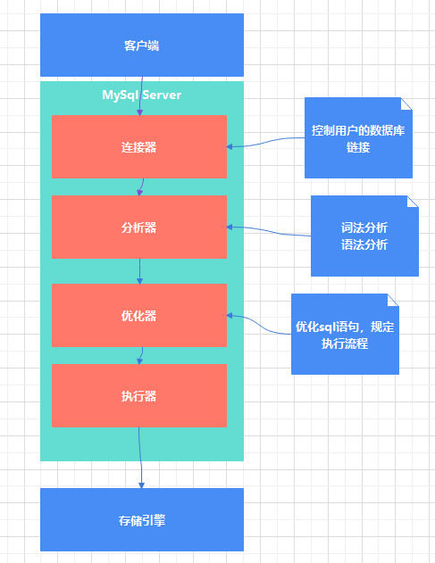
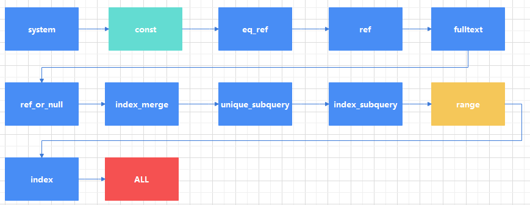

sql语句执行阶段
当mysql客户端发送一个sql请求到server端时，会一次通过mysql的连接器，分析器，优化器，执行器，然后才进入存储引擎

性能监控
- show profile ,可以分析sql语句执行各阶段的时间，系统耗费的资源情况
- 开启show profile:(mysql 5.7)
1set profiling=1;- 执行sql语句
1 2 3 4 5 6 7 8 9 10 11 12 13 14mysql> select * from student; +------+--------+------------+-------+ | s_id | s_name | s_birth | s_sex | +------+--------+------------+-------+ | 01 | 赵雷 | 1990-01-01 | 男 | | 02 | 钱电 | 1990-12-21 | 男 | | 03 | 孙风 | 1990-05-20 | 男 | | 04 | 李云 | 1990-08-06 | 男 | | 05 | 周梅 | 1991-12-01 | 女 | | 06 | 吴兰 | 1992-03-01 | 女 | | 07 | 郑竹 | 1989-07-01 | 女 | | 08 | 王菊 | 1990-01-20 | 女 | +------+--------+------------+-------+ 8 rows in set (0.02 sec)- 查看执行时间 , show profiles显示最近多条语句的执行时间列表，show profile显示最近一条sql语句执行的时间
1 2 3 4 5 6 7 8 9 10 11 12 13 14 15 16 17 18 19 20 21 22 23 24 25 26 27 28mysql> show profiles; +----------+------------+-----------------------+ | Query_ID | Duration | Query | +----------+------------+-----------------------+ | 1 | 0.01768700 | select * from student | +----------+------------+-----------------------+ 1 row in set, 1 warning (0.00 sec) mysql> show profile; +----------------------+----------+ | Status | Duration | +----------------------+----------+ | starting | 0.000049 | | checking permissions | 0.000005 | | Opening tables | 0.016576 | | init | 0.000016 | | System lock | 0.000012 | | optimizing | 0.000002 | | statistics | 0.000007 | | preparing | 0.000011 | | executing | 0.000002 | | Sending data | 0.000918 | | end | 0.000007 | | query end | 0.000007 | | closing tables | 0.000007 | | freeing items | 0.000059 | | cleaning up | 0.000011 | +----------------------+----------+ 15 rows in set, 1 warning (0.00 sec)- 可以通过show profile for query for 3, 查看show profiles 结果中Query_ID为3的sql语句的详细执行时间:
1 2 3 4 5 6 7 8 9 10 11 12 13 14 15 16 17 18 19 20 21 22 23 24 25 26 27 28 29 30 31 32 33 34 35 36mysql> show profiles; +----------+------------+------------------------+ | Query_ID | Duration | Query | +----------+------------+------------------------+ | 1 | 0.00039725 | SELECT DATABASE() | | 2 | 0.00023775 | select * from students | | 3 | 0.00033250 | show tables | | 4 | 0.00925775 | select * from score | | 5 | 0.00086525 | select * from student | +----------+------------+------------------------+ 5 rows in set, 1 warning (0.00 sec) mysql> show profile for query 3; +----------------------+----------+ | Status | Duration | +----------------------+----------+ | starting | 0.000039 | | checking permissions | 0.000008 | | checking permissions | 0.000002 | | Opening tables | 0.000032 | | init | 0.000005 | | System lock | 0.000003 | | optimizing | 0.000002 | | statistics | 0.000008 | | preparing | 0.000005 | | executing | 0.000003 | | checking permissions | 0.000158 | | Sending data | 0.000011 | | end | 0.000002 | | query end | 0.000003 | | closing tables | 0.000001 | | removing tmp table | 0.000004 | | closing tables | 0.000003 | | freeing items | 0.000038 | | cleaning up | 0.000008 | +----------------------+----------+ 19 rows in set, 1 warning (0.00 sec)- 除了查看执行时间还有很多其他资源可以查看，包括：
- all，显示所有性能信息
- block io，显示io操作次数，show profile block io for query n
1 2 3 4 5 6 7 8 9 10 11 12 13 14 15 16 17 18 19 20 21 22 23 24 25mysql> show profile block io for query 3; +----------------------+----------+--------------+---------------+ | Status | Duration | Block_ops_in | Block_ops_out | +----------------------+----------+--------------+---------------+ | starting | 0.000039 | NULL | NULL | | checking permissions | 0.000008 | NULL | NULL | | checking permissions | 0.000002 | NULL | NULL | | Opening tables | 0.000032 | NULL | NULL | | init | 0.000005 | NULL | NULL | | System lock | 0.000003 | NULL | NULL | | optimizing | 0.000002 | NULL | NULL | | statistics | 0.000008 | NULL | NULL | | preparing | 0.000005 | NULL | NULL | | executing | 0.000003 | NULL | NULL | | checking permissions | 0.000158 | NULL | NULL | | Sending data | 0.000011 | NULL | NULL | | end | 0.000002 | NULL | NULL | | query end | 0.000003 | NULL | NULL | | closing tables | 0.000001 | NULL | NULL | | removing tmp table | 0.000004 | NULL | NULL | | closing tables | 0.000003 | NULL | NULL | | freeing items | 0.000038 | NULL | NULL | | cleaning up | 0.000008 | NULL | NULL | +----------------------+----------+--------------+---------------+ 19 rows in set, 1 warning (0.00 sec)- context switches,上下文切换次数
- cpu, 用户cpu时间，系统cpu时间
- IPC,发送和接收的消息数量
- page faults,页错误数量
- source，源码中函数名称和位置
1 2 3 4 5 6 7 8 9 10 11 12 13 14 15 16 17 18 19 20 21 22 23 24 25mysql> show profile source for query 3; +----------------------+----------+-----------------------+----------------------+-------------+ | Status | Duration | Source_function | Source_file | Source_line | +----------------------+----------+-----------------------+----------------------+-------------+ | starting | 0.000039 | NULL | NULL | NULL | | checking permissions | 0.000008 | check_access | sql_authorization.cc | 809 | | checking permissions | 0.000002 | check_access | sql_authorization.cc | 809 | | Opening tables | 0.000032 | open_tables | sql_base.cc | 5815 | | init | 0.000005 | handle_query | sql_select.cc | 128 | | System lock | 0.000003 | mysql_lock_tables | lock.cc | 330 | | optimizing | 0.000002 | JOIN::optimize | sql_optimizer.cc | 158 | | statistics | 0.000008 | JOIN::optimize | sql_optimizer.cc | 374 | | preparing | 0.000005 | JOIN::optimize | sql_optimizer.cc | 482 | | executing | 0.000003 | JOIN::exec | sql_executor.cc | 126 | | checking permissions | 0.000158 | check_access | sql_authorization.cc | 809 | | Sending data | 0.000011 | JOIN::exec | sql_executor.cc | 202 | | end | 0.000002 | handle_query | sql_select.cc | 206 | | query end | 0.000003 | mysql_execute_command | sql_parse.cc | 4956 | | closing tables | 0.000001 | mysql_execute_command | sql_parse.cc | 5009 | | removing tmp table | 0.000004 | free_tmp_table | sql_tmp_table.cc | 2413 | | closing tables | 0.000003 | free_tmp_table | sql_tmp_table.cc | 2442 | | freeing items | 0.000038 | mysql_parse | sql_parse.cc | 5622 | | cleaning up | 0.000008 | dispatch_command | sql_parse.cc | 1931 | +----------------------+----------+-----------------------+----------------------+-------------+ 19 rows in set, 1 warning (0.00 sec)- swaps，显示swap的次数
- performane_schema
mysql提供的一个只读数据库，使用performance_schema存储引擎，实时监控mysql运行时的性能情况，监控的数据存储在内存中，所以重启server后，数据会丢失。
从mysql5.7开始，performance_schema默认开启
-
performance_schema表的分类
查看performance_schema数据库表，可以看到他们以不同的前缀可以清楚的区分出用途，里面共87张表
1 2 3 4 5 6 7 8 9 10 11 12 13 14 15 16 17 18 19 20 21 22 23 24 25 26 27 28 29 30 31 32 33 34 35 36 37 38 39 40 41 42 43 44 45 46 47 48 49 50 51 52 53 54 55 56 57 58 59 60 61 62 63 64 65 66 67 68 69 70 71 72 73 74 75 76 77 78 79 80 81 82 83 84 85 86 87 88 89 90 91 92 93 94 95mysql> use performance_schema; Database changed mysql> show tables; +------------------------------------------------------+ | Tables_in_performance_schema | +------------------------------------------------------+ | accounts | | cond_instances | | events_stages_current | | events_stages_history | | events_stages_history_long | | events_stages_summary_by_account_by_event_name | | events_stages_summary_by_host_by_event_name | | events_stages_summary_by_thread_by_event_name | | events_stages_summary_by_user_by_event_name | | events_stages_summary_global_by_event_name | | events_statements_current | | events_statements_history | | events_statements_history_long | | events_statements_summary_by_account_by_event_name | | events_statements_summary_by_digest | | events_statements_summary_by_host_by_event_name | | events_statements_summary_by_program | | events_statements_summary_by_thread_by_event_name | | events_statements_summary_by_user_by_event_name | | events_statements_summary_global_by_event_name | | events_transactions_current | | events_transactions_history | | events_transactions_history_long | | events_transactions_summary_by_account_by_event_name | | events_transactions_summary_by_host_by_event_name | | events_transactions_summary_by_thread_by_event_name | | events_transactions_summary_by_user_by_event_name | | events_transactions_summary_global_by_event_name | | events_waits_current | | events_waits_history | | events_waits_history_long | | events_waits_summary_by_account_by_event_name | | events_waits_summary_by_host_by_event_name | | events_waits_summary_by_instance | | events_waits_summary_by_thread_by_event_name | | events_waits_summary_by_user_by_event_name | | events_waits_summary_global_by_event_name | | file_instances | | file_summary_by_event_name | | file_summary_by_instance | | global_status | | global_variables | | host_cache | | hosts | | memory_summary_by_account_by_event_name | | memory_summary_by_host_by_event_name | | memory_summary_by_thread_by_event_name | | memory_summary_by_user_by_event_name | | memory_summary_global_by_event_name | | metadata_locks | | mutex_instances | | objects_summary_global_by_type | | performance_timers | | prepared_statements_instances | | replication_applier_configuration | | replication_applier_status | | replication_applier_status_by_coordinator | | replication_applier_status_by_worker | | replication_connection_configuration | | replication_connection_status | | replication_group_member_stats | | replication_group_members | | rwlock_instances | | session_account_connect_attrs | | session_connect_attrs | | session_status | | session_variables | | setup_actors | | setup_consumers | | setup_instruments | | setup_objects | | setup_timers | | socket_instances | | socket_summary_by_event_name | | socket_summary_by_instance | | status_by_account | | status_by_host | | status_by_thread | | status_by_user | | table_handles | | table_io_waits_summary_by_index_usage | | table_io_waits_summary_by_table | | table_lock_waits_summary_by_table | | threads | | user_variables_by_thread | | users | | variables_by_thread | +------------------------------------------------------+ 87 rows in set (0.01 sec)其中setup_instruments表用来收集性能数据，setup_consumers用来保存性能数据，如果需要的性能数据没有，可能对应收集事件没有开启。我们可以将需要检测的事件打开。
1 2 3 4 5 6 7 8 9 10 11 12 13 14 15 16 17 18 19 20 21 22 23 24 25mysql> select * from setup_instruments where name like '%wait%' limit 10; +---------------------------------------------------------+---------+-------+ | NAME | ENABLED | TIMED | +---------------------------------------------------------+---------+-------+ | wait/synch/mutex/sql/TC_LOG_MMAP::LOCK_tc | NO | NO | | wait/synch/mutex/sql/LOCK_des_key_file | NO | NO | | wait/synch/mutex/sql/MYSQL_BIN_LOG::LOCK_commit | NO | NO | | wait/synch/mutex/sql/MYSQL_BIN_LOG::LOCK_commit_queue | NO | NO | | wait/synch/mutex/sql/MYSQL_BIN_LOG::LOCK_done | NO | NO | | wait/synch/mutex/sql/MYSQL_BIN_LOG::LOCK_flush_queue | NO | NO | | wait/synch/mutex/sql/MYSQL_BIN_LOG::LOCK_index | NO | NO | | wait/synch/mutex/sql/MYSQL_BIN_LOG::LOCK_log | NO | NO | | wait/synch/mutex/sql/MYSQL_BIN_LOG::LOCK_binlog_end_pos | NO | NO | | wait/synch/mutex/sql/MYSQL_BIN_LOG::LOCK_sync | NO | NO | +---------------------------------------------------------+---------+-------+ 10 rows in set (0.00 sec) mysql> select * from setup_consumers where name like '%wait%' limit 10; +---------------------------+---------+ | NAME | ENABLED | +---------------------------+---------+ | events_waits_current | NO | | events_waits_history | NO | | events_waits_history_long | NO | +---------------------------+---------+ 3 rows in set (0.00 sec)打开等待事件的采集器配置开关：
1UPDATE setup_instruments SET ENABLED = 'YES', TIMED = 'YES'where name like 'wait%';打开等待事件保存配置开关：
1UPDATE setup_consumers SET ENABLED = 'YES'where name like '%wait%';语句事件表：
1 2 3 4 5 6 7 8 9 10 11 12 13 14 15 16 17mysql> show tables like '%statement%'; +----------------------------------------------------+ | Tables_in_performance_schema (%statement%) | +----------------------------------------------------+ | events_statements_current | | events_statements_history | | events_statements_history_long | | events_statements_summary_by_account_by_event_name | | events_statements_summary_by_digest | | events_statements_summary_by_host_by_event_name | | events_statements_summary_by_program | | events_statements_summary_by_thread_by_event_name | | events_statements_summary_by_user_by_event_name | | events_statements_summary_global_by_event_name | | prepared_statements_instances | +----------------------------------------------------+ 11 rows in set (0.01 sec)等待事件记录表：
1 2 3 4 5 6 7 8 9 10 11 12 13 14 15 16 17 18mysql> show tables like '%wait%'; +-----------------------------------------------+ | Tables_in_performance_schema (%wait%) | +-----------------------------------------------+ | events_waits_current | | events_waits_history | | events_waits_history_long | | events_waits_summary_by_account_by_event_name | | events_waits_summary_by_host_by_event_name | | events_waits_summary_by_instance | | events_waits_summary_by_thread_by_event_name | | events_waits_summary_by_user_by_event_name | | events_waits_summary_global_by_event_name | | table_io_waits_summary_by_index_usage | | table_io_waits_summary_by_table | | table_lock_waits_summary_by_table | +-----------------------------------------------+ 12 rows in set (0.00 sec) -
show processlist，查看当前链接到数据库的链接信息
1 2 3 4 5 6 7 8 9mysql> show processlist; +----+------+-----------------+------+---------+------+----------+------------------+ | Id | User | Host | db | Command | Time | State | Info | +----+------+-----------------+------+---------+------+----------+------------------+ | 4 | root | localhost:3872 | test | Sleep | 101 | | NULL | | 5 | root | localhost:3873 | test | Sleep | 112 | | NULL | | 6 | root | localhost:11583 | test | Query | 0 | starting | show processlist | | 7 | root | localhost:12790 | test | Sleep | 191 | | NULL | +----+------+-----------------+------+---------+------+----------+------------------+
执行计划
执行计划可以通过EXPLAIN+SQL语句来查看优化器如何优化查询语句的。
|
|
结果中个列含义：
- id，select查询中的序号，包含一组数字，表示执行select字句或操作的顺序 如果id相同，那么执行顺序从上到下，如果id不同，子查询的id序号会递增，id值越大越优先执行。
- select_type,查询的类型，指普通查询，联合查询还是子查询，包含SIMPLE,PRIMAY,UNION,SUBQUERY,DEPENDENT，UNION,UNION RESULT,DERIVED等等
- table, 对应行正在访问的哪一个表，表名或者别名，可能是临时表或者union合并的结果集。 如果是表名是derivedN的形式，指使用的id为N的查询产生的衍生表，当有union result的时候，表名是union n1,n2的形式，n1,n2表示union的id
- type, 访问类型，表示以什么方式读取数据，能直接反应查询的效率，效率从高到低依次是：  一般情况下，保证查询至少达到range级别，最好能达到ref，All的话就是最差的全表扫描了
- possible_keys,可能应用到这张表的索引，一个或多个
- key,实际用到的索引
- key_len,索引中使用的字节数
- ref，索引中的哪一列被使用了
- rows，根据表的统计信息及索引使用情况，大致估算出所需记录需要读取的行数
- extra，额外的信息
- using filesort,mysql无法利用索引进行排序，只能利用算法进行排序
- using temporary,使用临时表保存中间数据
- using index, 当前查询时覆盖索引
- using where,使用where 进行条件过滤
- impossible where,where语句的结果总是false